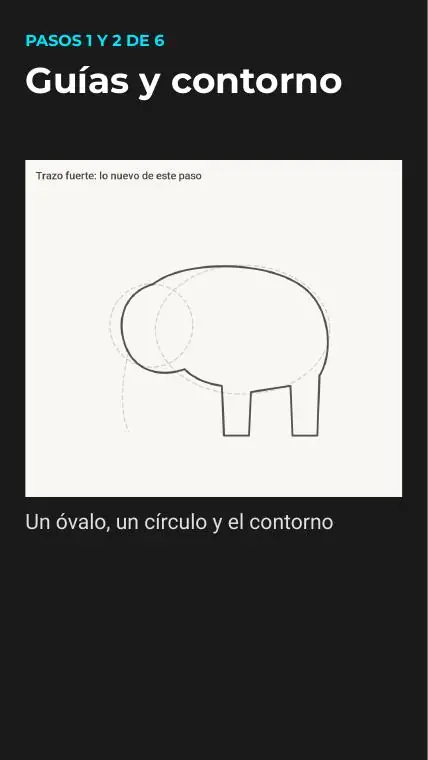
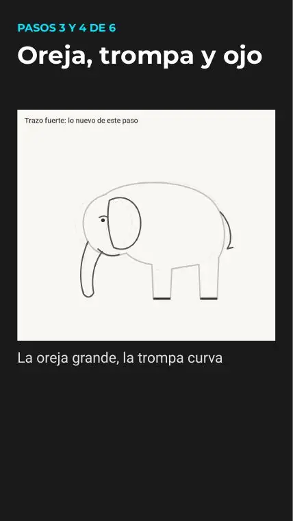
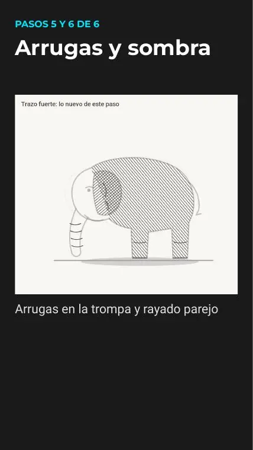
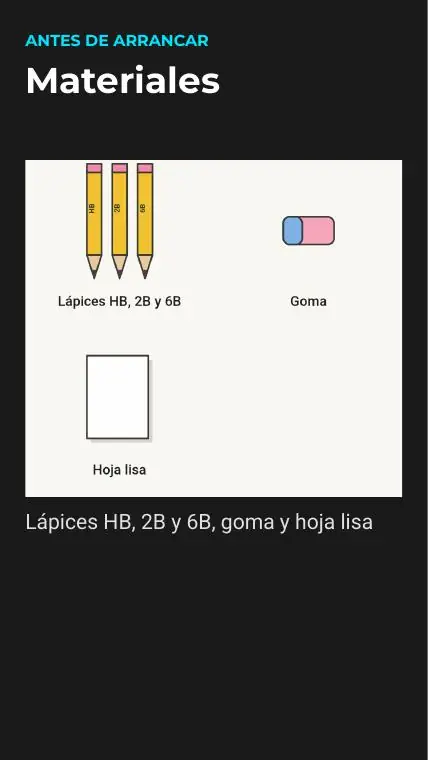
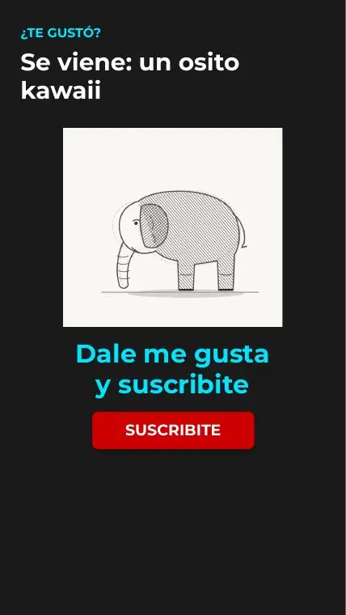

Tutoriales › Cómo dibujar un elefante con lápiz realista

Tutorial 12 · Short programado
Cómo dibujar un elefante con lápiz realista
Dibujo paso a paso con 3 bloques de pasos explicados abajo. Mirá el video, descargá las diapositivas en PDF (6 páginas) y practicá a tu ritmo.
Video
Estreno: 04/11/2026 · 12:00 (GMT-3)
Materiales
- Lápices HB, 2B y 6B, goma y hoja lisa
Paso a paso

Pasos 1 y 2 de 6 · Guías y contorno
Un óvalo, un círculo y el contorno

Pasos 3 y 4 de 6 · Oreja, trompa y ojo
La oreja grande, la trompa curva

Pasos 5 y 6 de 6 · Arrugas y sombra
Arrugas en la trompa y rayado parejo
Consejos
- Bocetá suave primero: las líneas de guía se borran al final.
- Si algo no sale, pausá el video o volvé a la diapositiva del PDF.
- Practicá el dibujo dos o tres veces: la segunda siempre sale mejor.
Todas las diapositivas del tutorial





Las imágenes de los pasos son páginas del PDF del tutorial (material propio del canal). Licencia: uso personal libre; no reventa.